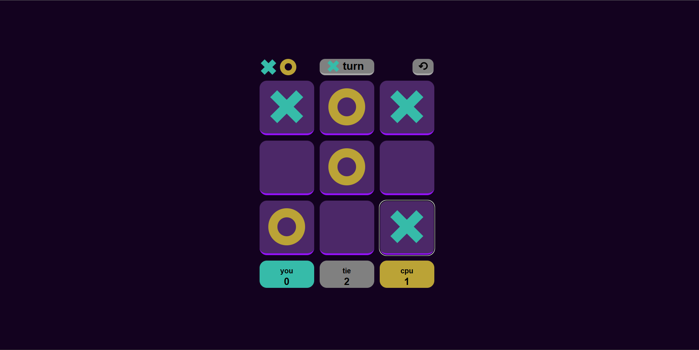
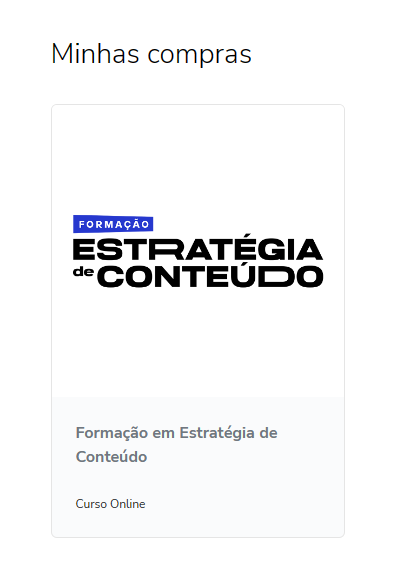
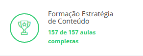

Olá, meu nome é Vinícius Torres (silence please), 19 anos, com nacionalidade brasileira e europeia, atualmente morando no Brasil, Pernambuco. Esse projeto é um resumo de toda a minha jornada de estudos e projetos com ciencias da computação.
Meu objetivo com esse portifólio é proporcionar um olhar mais humano em quem eu sou, minha história, personalidade, e também mostrar todos os projetos que fiz até agora.
Assim como muitos adolescentes, eu enfrentei problemas em minha casa e com a minha família, o que me levou a questionar muitas coisas, incluindo o que significa independência, qual é o sentido da vida e quem eu sou. Aos 15 anos, juntamente com meus pais, decidi que seria melhor para mim morar sozinho. Com o auxílio financeiro deles, pude passar mais tempo com meus pensamentos e desenvolver minha autonomia.
Vivendo sozinho, antes mesmo da pandemia, pude dedicar muito tempo à minha paixão pela filosofia e desenvolver uma personalidade mais reflexiva.
Após a morte do meu pai, recebi uma pequena herança e me vi diante de uma difícil escolha: permanecer em Caruaru, onde minha relação familiar estava se deteriorando e eu me sentia preso, ou usar o dinheiro para começar uma nova vida em outro lugar. Sem pensar duas vezes, escolhi deixar tudo para trás e ir para Florianópolis, em busca de novas oportunidades.
Foi a partir desse momento que comecei a pensar mais seriamente sobre o meu futuro e a me questionar sobre a minha escolha de carreira e como ganhar dinheiro.
Durante o meu tempo em Florianópolis, por estar próximo da Universidade Federal, tive a oportunidade de conhecer diversos estudantes, incluindo alguns da área de filosofia. Essa época foi uma das mais enriquecedoras da minha vida, pois aprendi muito sobre relacionamentos, socialização, sociedade e política. Aprendi também que às vezes devemos priorizar os sentimentos dos outros ao invés de priorizarmos estarmos sempre certos. É extremamente importante pensar nas emoções e sentimentos dos outros, mas ao mesmo tempo, não esquecermos dos nossos.
Sozinho aos 17 anos, em uma cidade desconhecida, sem amigos ou família e sem estar matriculado em uma universidade, tive que tomar uma decisão: como me sustentar no futuro?
Minha primeira escolha foi aprender desenvolvimento de jogos de forma auto didata. Assistindo tutoriais gratuitos e praticando com exercícios, aprendi o básico de C# e estava pronto para colocar meus conhecimentos em prática. Com alguns protótipos já criados, me senti confiante para participar de uma game jam. Na época, LudWig estava organizando uma com o tema "Foddian Games" (jogos frustrantes de jogar, como Jump King).
Usando o Unity, em menos de uma semana, fiz um jogo rogue like chamado Coliseum, intensionalmente difícil Disponível no itch.io.
Com esse projeto, aprendi a lidar com prazos apertados, a aprender ferramentas com base no que é necessário, a considerar o tempo e as limitações de produção e a questionar se a velocidade é mais importante. Em seguida, criei um código que atendesse a essa demanda e, se fosse necessário escalar o projeto, refatoraria o código a partir dessa demanda. Aprendi também que a pré-otimização e a pré-refatoração podem ser obstáculos que impedem a criatividade e dificultam a adição de mecânicas para um rápido teste.
Ter mergulhado no desenvolvimento de jogos me proporcionou grandes experiências, como entender as causas que levam equipes a não conseguirem finalizar um projeto para game jam, compreender as limitações individuais e aprimorar minhas habilidades de relacionamento com equipes e projetos online. Todos os grupos em que participei se comunicavam em inglês, o que me ajudou a aperfeiçoar minhas habilidades de comunicação nessa língua.
Com isso, surgiu outra game jam e conheci um cara super legal com quem decidi criar um jogo cujo objetivo era simplesmente relaxar, sem objetivos, pressão ou punição por perder ou game over, chamado Farmlax. Foi uma experiência pura de apenas desfrutar um jogo, e só. O jogo foi feito em dois dias durante o fim de semana, já que ele trabalhava e era o único tempo livre que tínhamos. Foi extremamente divertido criar um jogo tão rápido, tão simples e que conseguia transmitir uma sensação usando apenas o necessário. Aprendi muito sobre lidar com o perfeccionismo e criar protótipos rapidamente. O jogo também está disponível no itch.io.
Nesse projeto, aprendi a me comunicar melhor com meu colega de equipe, entender que às vezes é mais importante deixar o ego de lado e encontrar uma ideia em comum. Compreendi que em um projeto em equipe é fundamental valorizar a opinião e a vontade de todos, e somente a partir daí criar um plano. Aprendi a aceitar os erros dos outros e reconhecer os meus próprios, buscando sempre melhorá-los. Essas habilidades de comunicação e colaboração são extremamente importantes em qualquer ambiente de trabalho, especialmente na área de tecnologia.
No meu último projeto com Unity, infelizmente não consegui finalizá-lo por diversas razões, incluindo minha ambição de criar um projeto maior do que o tempo que eu tinha disponível, falta de planejamento prévio ao desenvolvimento e problemas financeiros. No entanto, mesmo que inacabado, ainda considero importante mencioná-lo.
Dediquei meses ao desenvolvimento da lógica básica do jogo, background e escalabilidade. Durante esse processo, aprendi a importante lição de que a otimização precoce pode ser uma armadilha e um obstáculo para a criatividade. Meu projeto era um jogo de cartas altamente inspirado em jogos como Legends of Runeterra, Magic e Yugioh, mas acabou sendo mais ambicioso do que eu podia gerenciar na época.
Com esse projeto, aprendi que não se pode substituir um pré-planejamento adequado e que é importante saber abandonar projetos que demandem muito tempo e energia para investir em outros mais simples. Também entendi a importância de lidar melhor com meus recursos e aceitar meus erros para crescer como programador.
Após isso, meu dinheiro estava começando a acabar e eu não sabia o que fazer. Não me parecia que desenvolvimento de jogos iria me levar para muito longe, então optei por trocar de área, e fui para artes.
Aqui eu aprendi muito sobre como usar cores e shapes para compor uma experiencia artística. Entendi a valorizar a experiencia tanto de quem consome quanto a de quem desenvolve, e a partir dai julgar qual sentimento e ideia será enfatizado. Aprendi conceitos que hoje percebo o quão importante são para UX e UI.
Ainda indeciso, depois de explorar diversas áreas, decidi me dedicar ao desenvolvimento web e comecei a aprender as tecnologias básicas de front-end e back-end, como HTML, CSS, JavaScript, React, Node.js, Express, serviços em nuvem e muito mais. Uma das principais fontes de aprendizado foi o FreeCodeCamp, onde completei muitos projetos e exercícios, e assisti a muitas aulas. Entre eles, destaco o site do jogo da velha que criei para testar minhas habilidades. Acesse aqui.
Durante esse projeto, pude perceber como os conceitos de ciência da computação e artes que havia aprendido anteriormente podiam ser facilmente transportados para outros projetos. Apesar de ter experiência com outros tipos de aplicativos e linguagens, consegui aplicar muitos dos conhecimentos que adquiri no desenvolvimento do jogo da velha. Isso me mostrou que, na teoria, todas as linguagens de programação seguem certos padrões e, ao aprender os fundamentos, é possível adaptar esse conhecimento facilmente a outros projetos, mesmo que a princípio pareçam completamente diferentes.
Enquanto continuava indeciso em relação a minha carreira, decidi investir em um curso de marketing com um dos maiores nomes de marketing digital de conteúdo do Brasil e do mundo, Paulo Cuenca. Embora o curso tenha atrasado o certificado, acabei reembolsando-o após 6 meses e, portanto, só tive acesso às aulas. No entanto, elas foram extremamente valiosas e me permitiram aprender várias coisas importantes sobre o mercado e como apresentar um produto.
 Todas as aulas assistidas.
O curso foi revelador e esclarecedor, mostrando como ainda temos comportamentos primitivos em um mundo digital e como é possível prever certos comportamentos para engajar produtos e ser melhor aceito. Além disso, o curso oferece reflexões sobre como ser você mesmo, aceitar ser parte de um nicho e criar conteúdo de qualidade para esse nicho, mesmo que você seja rejeitado por todos os outros. Acredito que tudo o que aprendi aqui é extremamente importante para entrar no mercado de trabalho empresarial.
Acredito que o conhecimento adquirido no curso pode ser extremamente valioso para minha carreira como desenvolvedor de software. Compreender as necessidades e comportamentos dos usuários pode me ajudar a criar produtos mais eficientes e atraentes, além de me permitir trabalhar de forma mais próxima com as equipes de marketing e design.
No final, tive que tomar uma decisão definitiva sobre qual área me dedicaria completamente, seguindo minhas paixões, e a escolha foi ciência da computação. É uma das minhas maiores paixões e uma das áreas de maior crescimento no mundo, além de ser bem remunerada. A partir daí, comecei a ler vários livros e a fazer o curso CS50 de Harvard, o qual esse site será usado como projeto final para receber meu certificado.
Li vários livros como "Code Clean, Robert C. Martin" e "Game Programming Patterns, Robert Nystrom".


Com o livro Clean Code, aprendi a escrever códigos melhores, para que possam ser compreendidos por mim mesmo no futuro e pelos colegas de trabalho. O livro propõe muitas teorias interessantes sobre organização, embora haja algumas críticas de que aplicar essas teorias pode deixar o aplicativo até 20 vezes mais lento. No entanto, quando um código não precisa ser otimizado ao máximo, como em um robô que será enviado para Marte com pouca memória RAM e disco, aplicar esses conceitos é mais do que um bom hábito para criar códigos escaláveis e fáceis de manter.
Com o livro Game Programming Patterns, fui introduzido a muitas lógicas de organização, mas dessa vez, em vez de focar na leitura do código, a organização foca muito mais na lógica e no objetivo de escalar e estruturar grandes quantidades de lógica e códigos. O livro resume muitos conceitos do famoso livro Design Patterns dos GOF, adapta e foca naqueles mais usados em lógicas para jogos, que são muito procurados mesmo em áreas fora do desenvolvimento de jogos.
Quanto aos livros que ainda pretendo terminar de ler, já que não tive tempo de concluir eles, incluem "Computer Systems: A Programmer's Perspective, Randal Bryant" e "Operating System Concepts, Avi Silberschatz".


Esses são, de longe, os livros mais importantes da minha carreira. Entender como os computadores funcionam em um nível mais baixo é fundamental em uma área em que surgem tantas vulnerabilidades com frequência. Com esses livros, tenho aprendido como a RAM, as redes, o disco rígido, a CPU e outros componentes funcionam e como podemos usar esse conhecimento para escrever códigos melhores, mais seguros e mais rápidos
Nesse momento, estou buscando oportunidades de emprego enquanto finalizo meus estudos em ciência da computação. Apesar de estar passando por uma situação financeira complicada, estou focado em concluir este portfolio e obter meu certificado do curso CS50 de Harvard.
Após a conclusão deste projeto, pretendo continuar desenvolvendo minhas habilidades por meio de leituras e projetos pessoais, com planos de incorporar tecnologias como cloud, node e express em um site dinâmico como próximo desafio.
Acredito que este portfolio e minha trajetória de vida possam chamar a atenção de potenciais empregadores e me conceder oportunidades para entrevistas e, assim, eventualmente conquistar uma posição no mercado de trabalho. Estou ansioso para aplicar meu conhecimento e habilidades em um ambiente profissional e continuar crescendo na minha carreira.
Acredito que tenho algumas qualidades que podem me destacar no mercado, tais como minha paixão por aprender e compreender a ciência da computação, chegando ao ponto de estudar livros complexos sobre hardware e até mesmo fazer um curso rápido de engenharia elétrica para entender circuitos. Além disso, sou bastante comprometido e disciplinado com meus projetos, sempre buscando aprimorar minhas habilidades e conhecimentos para entregar um trabalho de qualidade.
- Busco constantemente me atualizar sobre as mais recentes tecnologias e tendências em desenvolvimento web, a fim de aprimorar minhas habilidades.
- Minha experiência anterior em artes, jogos e marketing, combinada com minhas habilidades em desenvolvimento web, me tornam um profissional altamente versátil e criativo, capaz de contribuir significativamente para o sucesso de projetos digitais em múltiplas áreas.
- Tenho interesse em como a mente humana funciona e como criar experiências agradáveis em produtos com UX, UI e marketing.
- Possuo conhecimentos sobre filosofia, o que se mostra necessário em tempos difíceis para uma reflexão mais profunda sobre política, saúde humana, psicologia, sentido da vida e outros temas relevantes.
- Possuo conhecimentos sólidos e profundos em ciências da computação, como hábitos de código limpo, sistemas operacionais, cloud, web, design, arquitetura de código, SOLID princípios, entre outros.
- Como a média de leitura no país é de 2,43 livros por ano, meus hábitos de leitura sobre filosofia e ciências da computação são um grande diferencial.
- Tenho vasta experiência trabalhando em equipe e criando jogos para game jams, o que aprimorou minhas habilidades de comunicação e sociais.
em desenvolvimento...
test area